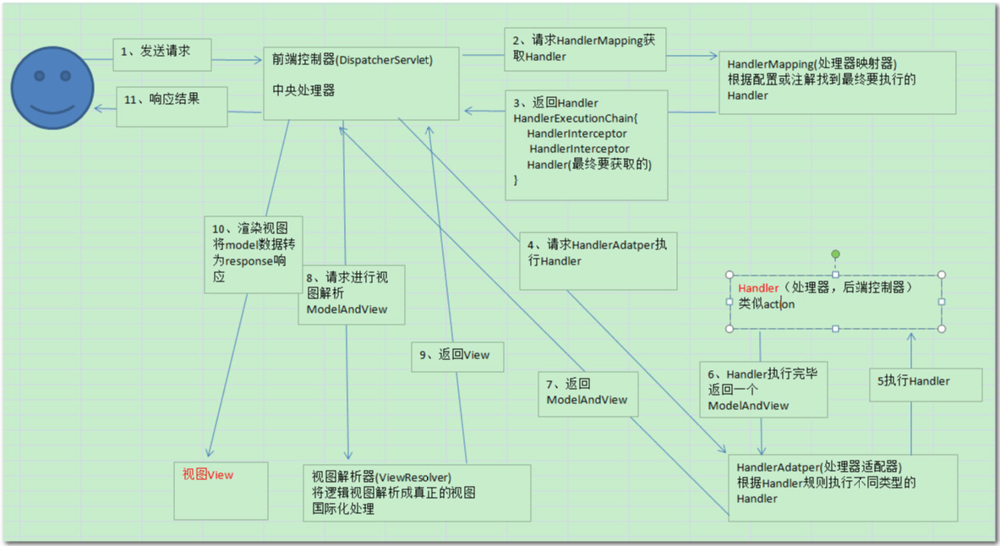
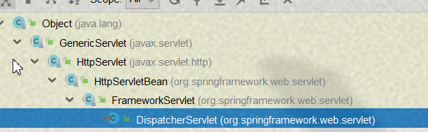

按照上边的执行流程图，我们可以看出一个SpringMVC整体的一个执行轮廓，下面我们具体来分析下
首先服务器接收到一个请求，匹配并调用了我们的前端控制器（DispatcherServlet）也叫中央处理器的请求路径，在web.xml文件中配置，我们来看下配置文件
<servlet>
<servlet-name>springmvc</servlet-name>
<servlet-class>org.springframework.web.servlet.DispatcherServlet</servlet-class>
<init-param>
<param-name>contextConfigLocation</param-name>
<param-value>classpath:springmvc.xml</param-value>
</init-param>
<load-on-startup>1</load-on-startup>
</servlet>
<servlet-mapping>
<servlet-name>springmvc</servlet-name>
<!-- / 代表匹配所有除了jsp文件的请求 -->
<url-pattern>/</url-pattern>
</servlet-mapping>因为DispatcherServlet实际上是间接的继承了我们的HttpServlet，所以它就相当于一个Servlet，SpringMVC帮我们封装好的一个Servlet，下面是继承体系

所以说，当来了一个请求后，WEB容器将把请求交给我们的DispatcherServlet进行处理
DispatcherServlet接收到请求后，会把我们的请求信息交给HandlerMapping处理器映射器进行处理
HandlerMapping根据请求的URL信息去查找匹配的URL的Handler，如果查找成，并返回一个执行链，下面来看下底层执行代码
protected HandlerExecutionChain getHandler(HttpServletRequest request) throws Exception {
Iterator var2 = this.handlerMappings.iterator();
HandlerExecutionChain handler;
do {
if (!var2.hasNext()) {
return null;
}
HandlerMapping hm = (HandlerMapping)var2.next();
if (this.logger.isTraceEnabled()) {
this.logger.trace("Testing handler map [" + hm + "] in DispatcherServlet with name '" + this.getServletName() + "'");
}
handler = hm.getHandler(request);//根据request对象获取handler，获取到的话将返回一个对象，没有的话将返回null 有兴趣童鞋自行深入查看
} while(handler == null);//如果handler为null继续执行循环
return handler;
}如果没有找到的话将执行以下代码
protected void noHandlerFound(HttpServletRequest request, HttpServletResponse response) throws Exception {
if (pageNotFoundLogger.isWarnEnabled()) {
pageNotFoundLogger.warn("No mapping found for HTTP request with URI [" + getRequestUri(request) + "] in DispatcherServlet with name '" + this.getServletName() + "'");
}
if (this.throwExceptionIfNoHandlerFound) {
ServletServerHttpRequest sshr = new ServletServerHttpRequest(request);
throw new NoHandlerFoundException(sshr.getMethod().name(), sshr.getServletRequest().getRequestURI(), sshr.getHeaders());
} else {
response.sendError(404);//响应404
}
}找到成功的情况下，DispatcherServlet再次请求 处理器适配器（HandlerAdapter）调用相应的Handler 进行处理返回 ModelAndView 给 DispatcherServlet，底层代码，粗略看下即可，不是重点
protected void doDispatch(HttpServletRequest request, HttpServletResponse response) throws Exception {
HttpServletRequest processedRequest = request;
HandlerExecutionChain mappedHandler = null;
boolean multipartRequestParsed = false;
WebAsyncManager asyncManager = WebAsyncUtils.getAsyncManager(request);
try {
ModelAndView mv = null;
Exception dispatchException = null;
try {
processedRequest = this.checkMultipart(request);
multipartRequestParsed = processedRequest != request;
mappedHandler = this.getHandler(processedRequest);
if (mappedHandler == null || mappedHandler.getHandler() == null) {
this.noHandlerFound(processedRequest, response);
return;
}
HandlerAdapter ha = this.getHandlerAdapter(mappedHandler.getHandler());
String method = request.getMethod();
boolean isGet = "GET".equals(method);
if (isGet || "HEAD".equals(method)) {
long lastModified = ha.getLastModified(request, mappedHandler.getHandler());
if (this.logger.isDebugEnabled()) {
this.logger.debug("Last-Modified value for [" + getRequestUri(request) + "] is: " + lastModified);
}
if ((new ServletWebRequest(request, response)).checkNotModified(lastModified) && isGet) {
return;
}
}
if (!mappedHandler.applyPreHandle(processedRequest, response)) {
return;
}
mv = ha.handle(processedRequest, response, mappedHandler.getHandler()); //在这里边调用相应的Handler，并通过这个方法返回ModelAndModel给DispatcherServlet
if (asyncManager.isConcurrentHandlingStarted()) {
return;
}
this.applyDefaultViewName(request, mv);
mappedHandler.applyPostHandle(processedRequest, response, mv);
} catch (Exception var19) {
dispatchException = var19;
}
this.processDispatchResult(processedRequest, response, mappedHandler, mv, dispatchException);
} catch (Exception var20) {
this.triggerAfterCompletion(processedRequest, response, mappedHandler, var20);
} catch (Error var21) {
this.triggerAfterCompletionWithError(processedRequest, response, mappedHandler, var21);
} finally {
if (asyncManager.isConcurrentHandlingStarted()) {
if (mappedHandler != null) {
mappedHandler.applyAfterConcurrentHandlingStarted(processedRequest, response);
}
} else if (multipartRequestParsed) {
this.cleanupMultipart(processedRequest);
}
}
}然后DispatcherServlet将ModelAndView请求对应的ViewResolver（视图解析器）解析视图，然后返回具体的View，底层实现
protected View resolveViewName(String viewName, Map<String, Object> model, Locale locale, HttpServletRequest request) throws Exception {
Iterator var5 = this.viewResolvers.iterator();
View view;
do {
if (!var5.hasNext()) {
return null;
}
ViewResolver viewResolver = (ViewResolver)var5.next();
view = viewResolver.resolveViewName(viewName, locale);
} while(view == null);
return view;
}DispatcherServlet对View视图进行渲染，也就是把模型数据填充到视图里边，底层执行代码
protected void render(ModelAndView mv, HttpServletRequest request, HttpServletResponse response) throws Exception {
Locale locale = this.localeResolver.resolveLocale(request);
response.setLocale(locale);
View view;
if (mv.isReference()) {
view = this.resolveViewName(mv.getViewName(), mv.getModelInternal(), locale, request);
if (view == null) {
throw new ServletException("Could not resolve view with name '" + mv.getViewName() + "' in servlet with name '" + this.getServletName() + "'");
}
} else {
view = mv.getView();
if (view == null) {
throw new ServletException("ModelAndView [" + mv + "] neither contains a view name nor a " + "View object in servlet with name '" + this.getServletName() + "'");
}
}
if (this.logger.isDebugEnabled()) {
this.logger.debug("Rendering view [" + view + "] in DispatcherServlet with name '" + this.getServletName() + "'");
}
try {
view.render(mv.getModelInternal(), request, response);
} catch (Exception var7) {
if (this.logger.isDebugEnabled()) {
this.logger.debug("Error rendering view [" + view + "] in DispatcherServlet with name '" + this.getServletName() + "'", var7);
}
throw var7;
}
}最后DispatcherServlet将视图传递给前台
PS：
Spring MVC核心组件：
1.DispatcherServlet(中央处理器)：将请求转发给控制器
2.Controller（控制器）：处理请求的控制器
3.HandlerMapping（映射处理器）：负责映射中央处理器转发给Controller时的映射策略
4.ModelAndView：服务器返回数据以及视图层的封装类
5.ViewResolver（视图解析器）：解析具体的视图
当用户发起请求后,执行DiapacherServlet,如果是JSP直接调用jsp页面.如果不是JSP,DiapacherServlet调用HandlerMapping判断请求URL是否合法,如果URL不存在报错,如果URL存在使用HandlerAdapter调用具体的HandlerMethod,当Handler执行完成后会返回ModelAndView,会被ViewResovler解析,调用具体的物理视图.
最终响应给客户端浏览器.